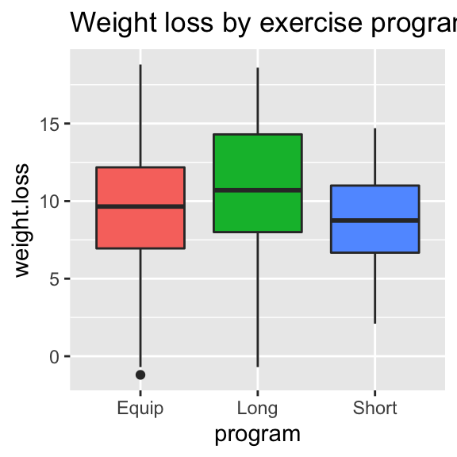

Math 140: Reference Guide to Inference with R
One mean
Question: We want to investigate/estimate the mean of a population.
Example: What is the average length (in millimeters) of woolly bear caterpillars
The majestic woolly bear caterpillar
Notation/terminology
- \(\mu\) - the mean of all elements in the population (which is the unknown parameter of interest)
- \(n\) - the size of an independent sample of elements gathered from the population.
- \(\overline{x}\) - the mean of the \(n\) values in the sample.
- \(s\) - the standard deviation of the \(n\) values in the sample.
Confidence Interval for \(\mu\)
We use the formula \[\overline{x} \pm t^*\cdot\text{SE}\] where \[\text{SE}=\frac{s}{\sqrt{n}},\] and \(t^*\) is the value in the \(T\)-distribution with \(n-1\) degrees of freedom that corresponds to the desired confidence level.
We include the entire calculation in one code chunk, starting with entering the raw data (a fictitious sample of 20 woolly bear caterpillar lengths).
Calculate the confidence interval in R
# the data in vector form
wb = c(52.0, 48.9, 47.3, 47.3, 48.6, 48.8, 42.8, 44.3, 46.7, 46.4,
47.5, 51.4, 49.0, 47.7, 48.5, 48.5, 45.8, 49.3, 48.1, 46.5)
# summary statistics
n=length(wb) #sample size
xbar=mean(wb) #sample mean
s = sd(wb) #sample standard deviation
C = .95 # confidence level
df = n-1 #degrees of freedom
SE = s/sqrt(n)
tstar = qt(C + (1-C)/2,df)
MOE = tstar*SE
xbar + c(-MOE,MOE) #Confidence Interval## [1] 46.78067 48.75933Interpretation We are 95% confident that the population mean \(\mu\) length of woolly bear caterpillars is between 46.8 and 48.8 millimeters.
Remark 95% confidence does not refer to likelihood of individual caterpillar lengths landing in the interval - it is just making a claim about the average length of all woolly bear caterpillars. For instance, in our sample, only 8 of the 20 observations fall within the range of the interval.
Significance Test
To test the null hypothesis \(H_o: \mu = \mu_0\) against one of three possible alternatives:
- \(H_a: \mu > \mu_o\) (one-sided,
greaterthan \(\mu_o\)) - \(H_a: \mu < \mu_o\) (one-sided,
lessthan \(\mu_o\)) - \(H_a: \mu \neq \mu_0\)
(
two.sided)
Suppose we want to test the average length of all woolly bear caterpillars is 45 mm or not (perhaps a paper we read claimed the average length of wb caterpillars is 45 millimeters and we want to check whether that seems reasonable for wb caterpillars in our neck of the woods). We choose the hypotheses \[H_o: \mu = 45 ~~\text{against}~~H_a: \mu\neq 45.\]
Test statistic: This is a t-score computed under the assumption that \(H_o\) is true: \[t= \frac{\overline{x}-\mu_0}{\text{SE}}\] where \(\text{SE}=s/\sqrt{n}\).
Calculate the test statistic in R
# Value of mean under the null hypothesis
mu0 = 45
## Data
wb = c(52.0, 48.9, 47.3, 47.3, 48.6, 48.8, 42.8, 44.3, 46.7, 46.4,
47.5, 51.4, 49.0, 47.7, 48.5, 48.5, 45.8, 49.3, 48.1, 46.5)
n=length(wb) #sample size
xbar=mean(wb) #sample mean
s = sd(wb) #sample standard deviation
# Standard error
SE = s/sqrt(n)
# Test statistic
t = (xbar-mu0)/SE
t## [1] 5.860202We can determine the p-value with the pt() function.
How to use the pt() function depends on the
alternative hypothesis.
In this case the p-value is
2*pt(-abs(t),n-1)## [1] 1.209613e-05Note: The p-value above is given in scientific notation: 1.21e-05 stands for \(1.21 \times 10^{-5} = 0.0000121\), which is, of course, a tiny p-value.
Conclusion This p-value is so small that we have convincing evidence that the null hypothesis is false. We have good reason to believe the average length of all woolly bear caterpillars is not 45 millimeters.
One proportion
Question: We want to estimate/investigate the proportion of all elements in a population having a certain feature.
Example: Estimate the proportion of all Linfield Students who would pick 3 or 7 if asked to pick a random number between 1 and 10.
Notation/terminology
- \(p\) - proportion of all elements in the population having the feature. Generally, \(p\) is an unknown parameter, called the population proportion, and it’s what we want to estimate/investigate via a sample.
- \(n\) - the size of an independent sample of elements gathered from the population.
- \(\hat{p}\) - the proportion of elements in the sample that have the feature. Note: \(\hat{p}=x/n\), where \(x\) is the number of successes, i.e., the number of observations having the feature of interest.
Confidence Interval for \(p\)
\[\hat{p} \pm z^* \cdot \text{SE}\] where \[SE \approx \sqrt{\frac{\hat{p}(1-\hat{p})}{n}},\] and \(z^*\) is the value in the standard normal distribution \(N(0,1)\) that corresponds to the desired confidence level.
Calculate the confidence interval in R
# Using class data from the 2021-22 academic year
n=86 #sample size
x=34 #successes
C = .95 # confidence level
phat = x/n
SE = sqrt(phat*(1-phat)/n)
zstar = qnorm(C + (1-C)/2)
MOE = zstar*SE #margin of error
phat + c(-MOE,MOE) #Confidence Interval## [1] 0.2920152 0.4986824Interpretation: We are 95% confident that the proportion of all Linfield students who would pick 3 ro 7 on the random number question is between .292 and .499.
Hypothesis test
To test the null hypothesis \[H_o: p = p_0\] against one of three possible alternatives:
- \(H_a: p > p_o\) (one-sided,
greaterthan \(p_o\)) - \(H_a: p < p_o\) (one-sided,
lessthan \(p_o\)) - \(H_a: p \neq p_0\)
(
two.sided)
Test statistic. This is a z-score computed under the assumption that \(H_o\) is true: \[z = \frac{\hat{p}-p_o}{\text{SE}}\] where \[\text{SE}=\sqrt{\frac{p_o(1-p_o)}{n}}.\]
Suppose we want to test the claim that 20% of all Linfield students would pick 3 or 7 on the random number question (since 3 and 7 make up 2 of the possible 10 choices). We test the hypotheses \[H_o: p = 0.2 ~~\text{against}~~H_a: p \neq 0.2.\]
Calculate the test statistic in R
p0=.2
n=86 #sample size
x=34 #successes
phat = x/n
SE = sqrt(p0*(1-p0)/n) # If Ho is true, this is the standard error!!
z = (phat-p0)/SE
z## [1] 4.528976We can determine the p-value with the pnorm() function.
How to use the pnorm() function depends on the
alternative hypothesis.
In this case, since we have a 2-sided alternative, the p-value is
2*pnorm(-abs(z))## [1] 5.92701e-06Conclusion This p-value is so small that we reject the null and conclude that \(p \neq .2\). This conclusion agrees with the fact that our confidence interval above did not include .2 within it! We are confident that \(p \neq .2\).
Using t.test()
The t.test() function is a black box r command
that does confidence interval and test of significance calculations for
us in one fell swoop for both a single population mean and for the
difference of two means. (If you type t.test in the RStudio help search
box you can get information about options.)
The following code reproduces the test of significance we just ran
through, and it will also give the 95% confidence interval we
calculated. Essentially we input the data vector, the value of the mean
under the null hypothesis, and the nature of our alternative hypothesis
(greater, less, or
two.sided).
wb = c(52.0, 48.9, 47.3, 47.3, 48.6, 48.8, 42.8, 44.3, 46.7, 46.4,
47.5, 51.4, 49.0, 47.7, 48.5, 48.5, 45.8, 49.3, 48.1, 46.5)
t.test(wb, mu=45, alternative="two.sided")##
## One Sample t-test
##
## data: wb
## t = 5.8602, df = 19, p-value = 1.21e-05
## alternative hypothesis: true mean is not equal to 45
## 95 percent confidence interval:
## 46.78067 48.75933
## sample estimates:
## mean of x
## 47.77Example: Does the sample recorded below under the
name obs, drawn from a population with unknown mean \(\mu\), provide statistically significant
evidence at the \(\alpha = .05\) level
that \(\mu\) is less than 10?
obs <- c(10.1,9.4,9.8,8.6,10.2,9.1,10.0,8.9,9.4,9.7,10.3,9.6)
t.test(obs,mu=10,alternative="less")##
## One Sample t-test
##
## data: obs
## t = -2.6521, df = 11, p-value = 0.01125
## alternative hypothesis: true mean is less than 10
## 95 percent confidence interval:
## -Inf 9.868173
## sample estimates:
## mean of x
## 9.591667Conclusion The p-value of .01125 is less than 0.05. If the population mean were 10, the chances of gathering a random sample of size 12 having sample mean less than or equal to 9.59 is about 1.1% - this likelihood is small enough that we reject the null. We believe the population that this sample was drawn from has population mean less than 10.
Matched Pairs
Data: Consider pre- and post-test scores for 14 students enrolled in a course.
pre=c(52,49,55,37,68,72,64,71,81,57,52,66,71,65)
post=c(56,61,65,43,65,78,77,73,82,61,54,63,71,72)Are students improving test scores as a result of the course?
Let \(\mu_{\text{diff}}=\) the average difference (post-pre) in test scores for all students who take the course.
Note: The pre and post
data need to have been ordered to match according to student for this to
work. So, the first student had pre and post-test scores of 52 and 56,
the second student had pre and post-test scores of 49 and 61, etc.
We test \[H_o: \mu_{\text{diff}}=0~~\text{against}~~ H_a: \mu_{\text{diff}}>0,\] by doing a 1-sample \(t\)-test on the difference
diff=post-pre
t.test(diff,mu=0,alternative="greater")##
## One Sample t-test
##
## data: diff
## t = 3.2495, df = 13, p-value = 0.003167
## alternative hypothesis: true mean is greater than 0
## 95 percent confidence interval:
## 1.982586 Inf
## sample estimates:
## mean of x
## 4.357143Conclusion: With such a small p-value we reject the null hypothesis in favor of the alternative and conclude that the average difference (post-test minus pre-test) is positive, suggesting the course helps improve test scores, on average!
Two means
Question: Is there a difference between two population means?
Example: Is there a difference in the silver content (% Ag) in coins during two different eras of the reign of King Manuel, I, Comnenus (1143-1180)? 16 coins have been found and measured, 9 of the coins came from an early coinage, and 7 of the coins came from a coinage many years later.
Byzantine coin
Notation/terminology
- \(\mu_1\) - the mean silver content of all coins produced in the early coinage
- \(\mu_2\) - the mean silver content of all coins produced in the later coinage
- \(n_1\), \(\overline{x}_1\), \(s_1\) - the sample size, sample mean, and sample standard deviation of the sample gathered from the first population.
- \(n_2\), \(\overline{x}_2\), \(s_2\) - the sample size, sample mean, and sample standard deviation of the sample gathered from the first population.
The Data
Ag1 <- c(5.9,6.8,6.4,7.0,6.6,7.7,7.2,6.9,6.2)
Ag2 <- c(5.3,5.6,5.5,5.1,6.2,5.8,5.8) These data appear in The Handbook of Small Data Sets (p. 118), and are based on this article:
Hendy, M.F. and Charles J.A. (1970), The production techniques, silver content and circulation history of the twelfth-century Byzantine Trachy. Archaeonetry, 12. 13-21)
Summary Statistics
#first sample
n1 = length(Ag1)
xbar1 = mean(Ag1)
s1 = sd(Ag1)
#second sample
n2 = length(Ag2)
xbar2 = mean(Ag2)
s2 = sd(Ag2)Confidence Interval for \(\mu_1-\mu_2\)
We use the formula \[(\overline{x}_1-\overline{x}_2) \pm t^*\cdot \text{SE},\] where \[\text{SE}=\sqrt{\frac{s_1^2}{n_1}+\frac{s_2^2}{n_2}}\]
Calculate the confidence interval in R
# Confidence Level
C=.95
# Finding t* with rule of thumb
df = min(n1-1,n2-1)
tstar=qt(C+(1-C)/2,df)
SE = sqrt(s1^2/n1 + s2^2/n2) # standard error
moe=tstar*SE # margin of error
(xbar1-xbar2)+c(-moe,moe) #confidence interval## [1] 0.5744126 1.6859049Interpretation We believe with 95% confidence that the difference in the average silver content from the early coinage and the average silver content from the later coinage is between 0.57 and 1.69. Since this entire interval consists of positive values, we believe the average silver content in coins produced early in the reign is greater than the average silver content in coins produces later in the reign.
Significance Test
To test \[H_o: \mu_1 - \mu_2 = 0 ~~\text{against}~~ H_a: \mu_1 - \mu_2 \neq 0,\] the 2-sample test statistic is given by the formula \[t = \frac{\overline{x}_1-\overline{x}_2}{\sqrt{\frac{s_1^2}{n_1}+\frac{s_2^2}{n_2}}}\]
Calculate the test statistic in R
## Test statistic
SE = sqrt(s1^2/n1 + s2^2/n2) # standard error
t = (xbar1-xbar2)/SE
t## [1] 4.976011t.test()
t.test(Ag1,Ag2, alternative="two.sided")##
## Welch Two Sample t-test
##
## data: Ag1 and Ag2
## t = 4.976, df = 13.765, p-value = 0.0002138
## alternative hypothesis: true difference in means is not equal to 0
## 95 percent confidence interval:
## 0.6422519 1.6180655
## sample estimates:
## mean of x mean of y
## 6.744444 5.614286Conclusion With such a small p-value we reject the null hypothesis in favor of the alternative and conclude that there is a difference in average silver content of coins produced during these two eras.
Note on df: For the 2-sample t-test, R’s built-in
t.test() function results is the same test statistic as the
one we produce following the formula in the book, but it assumes a
different, less conservative degrees of freedom than what we’ve done in
class This creates a slightly different, less conservative margin of
error in confidence intervals, and a slightly different, less
conservative p-value in significance tests, than what we do by hand. If
interested, see the course notes for the df formula that R uses.
t.test() and data frames
Data from on-line surveys such as you’d build with Google Forms is stored as a long data frame, where each row in the spreadsheet contains all the answers from an individual respondent, and each column has all the responses to a particular question. In long form, the coin data in the example above would look like this:
| coinage | Ag |
|---|---|
| early | 5.9 |
| early | 6.8 |
| early | 6.4 |
| early | 7.0 |
| early | 6.6 |
| early | 7.7 |
| early | 7.2 |
| early | 6.9 |
| early | 6.2 |
| late | 5.3 |
| late | 5.6 |
| late | 5.5 |
| late | 5.1 |
| late | 6.2 |
| late | 5.8 |
| late | 5.8 |
We can use the t.test() command as follows to run the
2-sample \(t\)-test when the data are
given as a long form data matrix:
t.test(Ag~coinage,data=df,alternative="two.sided")##
## Welch Two Sample t-test
##
## data: Ag by coinage
## t = 4.976, df = 13.765, p-value = 0.0002138
## alternative hypothesis: true difference in means between group early and group late is not equal to 0
## 95 percent confidence interval:
## 0.6422519 1.6180655
## sample estimates:
## mean in group early mean in group late
## 6.744444 5.614286Also, if we load the tidyverse (with library(tidyverse))
into our session, we can easily extract sample sizes and sample means
and sample standard deviations by group as follows:
df %>%
group_by(coinage) %>%
summarize(size=length(Ag),avg=mean(Ag),stdev=sd(Ag)) ## # A tibble: 2 × 4
## coinage size avg stdev
## <chr> <int> <dbl> <dbl>
## 1 early 9 6.74 0.543
## 2 late 7 5.61 0.363Two proportions
Question: We want to estimate/investigate the difference between two population proportions \(p_1 - p_2\).
Example: Is there a difference between the proportion of all Linfield Students that have tested positive for COVID-19 at least once and the proportion of all Oregonians that have tested positive for COVID-19 at least once?
Notation/terminology
- \(p_1\) - proportion of all elements in population 1 having the feature under investigation.
- \(p_2\) - the proportion of all elements in population 2 having the feature under investigation.
- \(n_1\), \(n_2\) - the sizes of the two independent samples from the two populations.
- \(\hat{p_1}\) - the proportion of elements in the sample from population 1 that have the feature.
- \(\hat{p_2}\) - the proportion of elements in the sample from population 2 that have the feature.
Confidence Interval for \(p_1-p_2\)
The formula for the confidence interval:
\[(\hat{p_1}-\hat{p_2}) \pm z^* \cdot \text{SE}\] where \[SE \approx \sqrt{\frac{\hat{p_1}(1-\hat{p_1})}{n}+\frac{\hat{p_2}(1-\hat{p_2})}{n}}.\]
Calculate the interval in R
# (using artificial data)
n1=64 #sample size from pop'n 1
x1=29
phat1=x1/n1
n2=150 #sample size from pop'n 2
x2=42
phat2=x2/n2
C = .95 # confidence level
SE = sqrt(phat1*(1-phat1)/n1+phat2*(1-phat2)/n2)
zstar = qnorm(C + (1-C)/2)
MOE = zstar*SE #margin of error
round((phat1-phat2) + c(-MOE,MOE),3) #Confidence Interval## [1] 0.032 0.315Interpretation: We believe that the difference in population proportions, \(p_1 - p_2\), is in the range provided by the interval. Since the entire range of values in the interval is positive, the interval provides strong evidence that the difference \(p_1-p_2\) is positive. In other words, we have reason to believe that \(p_1 > p_2\). We have reason to believe that the proportion of Linfield students that have tested positive for COVID-19 at least once is greater than the state-wide proportion.
Hypothesis test
To test the null hypothesis \[H_o: p_1-p_2 = 0\] against one of these three alternative hypotheses:
- \(H_a: p_1-p_2 > 0\) (one-sided,
greaterthan \(p_o\)) - \(H_a: p_1-p_2 < 0\) (one-sided,
lessthan \(p_o\)) - \(H_a: p_1-p_2 \neq 0\)
(
two.sided)
Test statistic: This is a z-score computed under the assumption that \(H_o\) is true: \[z = \frac{\hat{p_1}-\hat{p_2}}{\text{SE}}\] where \[SE \approx \sqrt{\frac{\hat{p}(1-\hat{p})}{n}+\frac{\hat{p}(1-\hat{p})}{n}},\] and in this formula, \(\hat{p}\) denotes the pooled sample proportion, \(\displaystyle\hat{p}=\frac{x_1+x_2}{n_1+n_2}\).
Suppose we want to test the claim that the proportion of Linfield students who have tested positive for COVID-19 is the same as the state-wide proportion. We choose the hypotheses \[H_o: p_1-p_2 = 0 ~~\text{against}~~H_a: p_1-p_2 \neq 0.\]
Calculate the test statistic in R
# population 1
n1=64
x1=29
phat1 = x1/n1
#population 2
n2=150
x2=42
phat2=x2/n2
#pooled sample proportion
phat=(x1+x2)/(n1+n2)
C = .95 # confidence level
SE = sqrt(phat*(1-phat)/n1+phat*(1-phat)/n2)
z = (phat1-phat2)/SE
z## [1] 2.462664We can determine the p-value with the pnorm() function.
How to use the pnorm() function depends on the
alternative hypothesis.
Chi-square Goodness of Fit
Question: Do observations in a random sample follow a known distribution?
Example: Consider the population of Oregon towns and cities, and focus on the leading digit of each of these population numbers, as in the table below. Note: Data found here.
We display the first four and last four rows of this large data frame (that has 373 rows) The data frame is calledorcities.
| rank | city | population | lead.digit | |
|---|---|---|---|---|
| 1 | 1 | Portland | 645291 | 6 |
| 2 | 2 | Salem | 169259 | 1 |
| 3 | 3 | Eugene | 168302 | 1 |
| 4 | 4 | Gresham | 110494 | 1 |
| 370 | 370 | Granite | 19 | 1 |
| 371 | 371 | Bellfountain | 16 | 1 |
| 372 | 372 | Shaniko | 9 | 9 |
| 373 | 373 | Lonerock | 8 | 8 |
We ask this question of the data: Is it reasonable to expect that each of the digits 1-9 occur with equal frequency? A chi-square goodness of fit test can answer this question.
Below is the table of observed first digit frequencies, which we can obtain from the data frame above by running
table(orcities$lead.digit)##
## 1 2 3 4 5 6 7 8 9
## 122 61 50 30 29 17 19 20 25Run the chi-square test in R
X=chisq.test(table(orcities$lead.digit),p = c(rep(1/9,9)))Expected counts (rounded to 1 decimal point):
round(X$expected,1)## 1 2 3 4 5 6 7 8 9
## 41.4 41.4 41.4 41.4 41.4 41.4 41.4 41.4 41.4If all nine digits 1-9 arise with equal probability (1/9), we would expect about 41.4 occurrences of each digit in a sample of size 373. The observed counts appear to have a much different distribution than this.
Results:
X##
## Chi-squared test for given probabilities
##
## data: table(orcities$lead.digit)
## X-squared = 218.66, df = 8, p-value < 2.2e-16Conclusion: With such a small p-value (well, well below \(\alpha = .05\))) we reject the claim that all 9 digits 1-9 appear with equal frequency in a distribution of city populations.
Example 2. Benford’s Law asserts that in many distributions (but not all) the distribution of “leading digits” follows this specific, non-uniform distribution:
| Leading Digit | 1 | 2 | 3 | 4 | 5 | 6 | 7 | 8 | 9 |
|---|---|---|---|---|---|---|---|---|---|
| probability | .301 | .176 | .125 | .097 | .079 | .067 | .058 | .051 | .046 |
(These probabilities might seem artifical, but, according to Benford’s Law, the probability that a leading digit is \(k\) is given mathematically by \(\log_{10}\left(\frac{k+1}{k}\right)\).)
Is it plausible that Oregon town populations adhere to this distribution?
X=chisq.test(table(orcities$lead.digit),p = c(.301,.176,.125,.097,.079,.067,.058,.051,.046))Expected counts:
X$expected## 1 2 3 4 5 6 7 8 9
## 112.273 65.648 46.625 36.181 29.467 24.991 21.634 19.023 17.158These expected counts look much closer to the observed counts! Let’s view the results of the test:
Here are the results of the chi-square test:
X##
## Chi-squared test for given probabilities
##
## data: table(orcities$lead.digit)
## X-squared = 8.9896, df = 8, p-value = 0.3432Conclusion: Here the p-value is far larger than .05, suggesting we do not have reason to reject the null hypothesis that population figures in Oregon follow Benford’s Law. Restating this double negative, it is reasonable, based on this test, to argue that Oregon populations follow Benford’s Law.
Chi-square Test of Independence
Question: Are two categorical variables associated?
Example: Is there an association between the wall color in a room and the mood of people resting in the room?
The Data
Here are the first five rows of the data frame, called
df, which has 100 rows total.
| color | mood |
|---|---|
| white | anxious |
| red | calm |
| yellow | happy |
| white | anxious |
| white | anxious |
Here’s the two-way table:
table(df$mood,df$color)##
## purple red white yellow
## anxious 14 8 12 5
## calm 10 7 10 7
## happy 8 7 4 8Conducting the chi-square test of independence:
X = chisq.test(table(df$mood,df$color))# expected cell counts under the assumption that there is no association
X$expected##
## purple red white yellow
## anxious 12.48 8.58 10.14 7.8
## calm 10.88 7.48 8.84 6.8
## happy 8.64 5.94 7.02 5.4The \(\chi^2\) test statistic
X$statistic## X-squared
## 4.618345The summary of the test:
X##
## Pearson's Chi-squared test
##
## data: table(df$mood, df$color)
## X-squared = 4.6183, df = 6, p-value = 0.5936Conclusion: We have no statistical evidence of an association (since the p-value is so large, \(P>.5\)).
ANOVA
Question: We are interested in comparing more than two population means.
Example: We investigate whether there is a difference in average weight-loss for participants in different exercise programs: one that focuses on long exercise periods, one focusing on short exercise periods, and one focusing on short exercise periods with equipment.
Notation/terminology
- \(k\) denotes the number of groups we’re comparing
- \(\mu_i\) - the (unknown) population mean for group \(i\) (where \(i = 1, 2, \ldots, k\))
- \(n_i\) - the sample size of the independent sample gathered from group \(i\).
- \(\overline{x}_i\) - the sample mean of the \(n_i\) values in the sample from group \(i\).
- \(s_i\) - the sample standard deviation of the \(n_i\) values in the sample from group \(i\).
- \(N\) the overall sample size (\(N = n_1 + n_2 + \cdots + n_k\))
- MSG - the “mean square for groups” which measures the variation across all the group sample means
- MSE = the “mean square for error” which measures the overall variation of all \(N\) data points
The Data
It is convenient to encode the data as a long form data matrix, in which each row corresponds to a participant in the study, and we have two columns: one that specifies which group the participant was in, and one that records the value of interest (weight-loss in our example). Here are the first ten rows of the data frame:
| program | weight.loss |
|---|---|
| Equip | 6.0 |
| Long | 3.1 |
| Short | 10.4 |
| Short | 11.1 |
| Equip | 12.0 |
| Equip | 3.0 |
| Equip | 8.2 |
| Equip | 10.9 |
| Equip | 8.7 |
| Equip | 12.8 |
With the tidyverse loaded into your session, here is a
quick way to extract summary statistics (the data frame with the
program and weight.loss columns is called
df)
df %>%
group_by(program) %>%
summarize(size=length(weight.loss),
avg=mean(weight.loss),
stdev=sd(weight.loss))## # A tibble: 3 × 4
## program size avg stdev
## <chr> <int> <dbl> <dbl>
## 1 Equip 42 9.26 4.33
## 2 Long 37 11.0 4.34
## 3 Short 36 8.48 3.12We note that the number of groups in this study is \(k = 3\), and the total sample size is \(N = 115\).
Side-by-side box plots:
ggplot(df)+
geom_boxplot(aes(x=program,y=weight.loss,fill=program),show.legend=FALSE)+
ggtitle("Weight loss by exercise program")
Running anova in R:
anova(lm(weight.loss~program,data=df))## Analysis of Variance Table
##
## Response: weight.loss
## Df Sum Sq Mean Sq F value Pr(>F)
## program 2 119.26 59.632 3.74 0.02677 *
## Residuals 112 1785.78 15.944
## ---
## Signif. codes: 0 '***' 0.001 '**' 0.01 '*' 0.05 '.' 0.1 ' ' 1Conclusion: From the print out, the test statistic
from our data is \(F = 3.74\), and this
statistic lives in an F-distribution with numerator df = 2 and
denominator df = 112.
The p-value for this test is .02677, which indicates the probability of
having observed such a difference among group sample means if in fact
all groups have the same population mean. Since this likelihood is so
small (indeed it’s less than .05), we have reason to reject the null and
conclude that there is a difference in average weight-loss for these
different exercise programs. We note that the components of \(F = MSG/MSE\) appear in the display above.
MSG = 59.632 and MSE = 15.944.